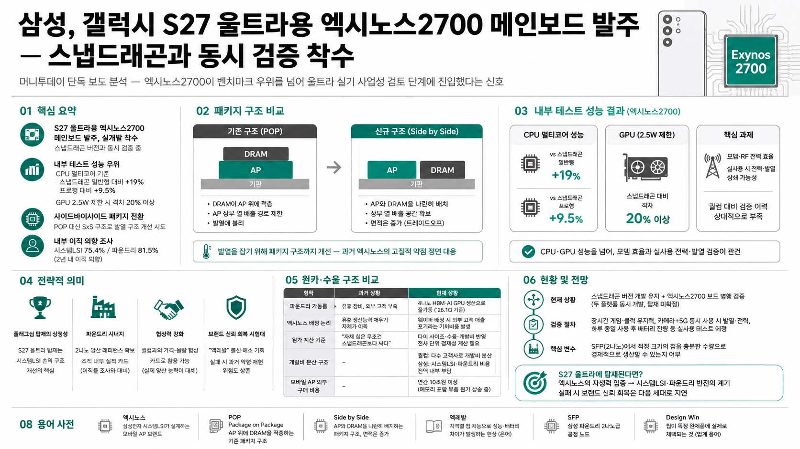

안될공학, 머니투데이 단독 보도 분석 — 엑시노스2700이 벤치마크 우위를 넘어 울트라 실기 사업성 검토 단계에 진입했다는 신호

01핵심 개요
머니투데이 9월 1일 단독 보도: 삼성이 갤럭시 S27 울트라용 엑시노스2700 메인보드를 발주하고 실개발 착수, 스냅드래곤 버전과 동시 검증 중
같은 취재원이 7월엔 "울트라는 전 지역 스냅드래곤"이라 보도했으나 두 달 만에 입장 변화 시사
내부 테스트: CPU 멀티코어 스냅드래곤 일반형 대비 +19%, 프로형 대비 +9.5%, GPU 2.5W 제한 시 격차 20% 이상
엑시노스2700은 POP 대신 사이드바이사이드 패키지 구조로 전환해 발열 구조 개선 시도
삼성 DS 내부 이직 의향 조사: 시스템LSI 75.4%, 파운드리 81.5% — 비메모리 조직 불만이 배경
02핵심 주장 / 논점 구조
메인보드 발주는 샘플칩 벤치마크보다 훨씬 깊은 개발 단계 — PMIC, 메모리 연결, 통신, 카메라 처리, 펌웨어, 열 설계까지 실기 기준으로 재설계해야 하는 작업
이미 스냅드래곤 버전 개발이 상당히 진행된 뒤에 별도 인력과 일정을 투입해 엑시노스 보드를 추가했다면, MX가 2700을 "출시 가능한 후보"로 격상시켰다는 정황으로 해석 가능
다만 이 보도를 곧바로 탑재 확정으로 받아들이기는 이르다 — 머니투데이는 과거에도 엑시노스 탑재 계획을 선보도했지만 실제 개발 중 계획이 바뀐 사례가 존재
진짜 관전 포인트는 "엑시노스가 확정됐는가"가 아니라 "MX가 왜 지금 실제 개발비까지 써가며 2700을 울트라 시험대에 올렸는가" — 기술적 가능성이 사업성 검토 단계로 넘어왔다는 신호로 봐야 함
03반도체 기술 원리 — 패키지 구조와 모뎀이 가르는 승부
기존 AP는 POP(Package on Package) 구조로 D램을 AP 위에 적층해왔으나, 엑시노스2700은 AP와 D램을 같은 기판 위에 나란히 배치하는 사이드바이사이드 구조 적용 예정
위아래로 겹친 두 칩을 옆으로 펼치면 AP 위쪽으로 열을 빼낼 공간이 늘어나 발열 개선에 유리하지만, 패키지가 옆으로 넓어져 메인보드 점유 면적은 커지는 트레이드오프 존재
발열을 잡기 위해 패키지 구조까지 손댄다는 것은 삼성이 과거 엑시노스의 고질적 약점(발열)을 정면으로 겨냥하고 있다는 뜻으로, 실제 제품에서 검증할 가치가 있는 변화
엑시노스가 넘어야 할 진짜 난제는 CPU·GPU가 아니라 모뎀일 가능성 — 스마트폰은 화면을 보지 않을 때도 기지국을 탐색하고 이동 중 주파수를 바꾸며 여러 대역을 묶어 통신하는데, 모뎀·RF가 전력을 많이 쓰면 AP에서 확보한 효율이 실사용 중 상쇄될 수 있음. 퀄컴은 이 영역을 수십 년간 전 세계 통신사 환경에서 검증해온 반면 엑시노스는 상대적으로 축적된 실적이 적음
04전략적 의미
시스템LSI 입장에서 S27 울트라 탑재는 단순 물량 확대 이상의 의미 — 판매 단가가 가장 높은 플래그십에 들어가야 사업부 손익 구조가 근본적으로 달라짐
파운드리에도 2나노 양산 레퍼런스라는 성과가 추가되어 조직 내부에 보여줄 실적 카드가 커짐 — 최근 노조 조사에서 시스템LSI 75.4%, 파운드리 81.5%가 "2년 내 이직 의향"이라 답한 것과 대비되는 반전 카드
엑시노스 탑재는 퀄컴과의 가격·물량 협상 카드로도 작동 — 다만 벤치마크 점수만으로는 부족하고, MX가 실제로 울트라 수백만 대를 엑시노스로 양산할 수 있어야 퀄컴이 물량 이동 가능성을 진지하게 받아들임
브랜드 신뢰 회복의 최대 시험대 — "엑레발"로 불리는 지역별 칩 차등에 대한 소비자 불신이 여전히 남아있는 가운데, 가장 비싸고 까다로운 울트라에 엑시노스를 넣는다는 것은 회사 스스로 이 칩의 안정성에 신용을 거는 행위. 발열·배터리 문제가 재발하면 과거의 악평이 되살아날 위험도 동시에 존재
05원가·수율 구조 비교
항목
과거 상황
현재 상황
파운드리 가동률
외부 고객 물량 부족, 유휴 장비 문제 상시
4나노 HBM 베이스다이·AI GPU 생산으로 풀가동(2026년 1분기 기준)
엑시노스 배정 논리
유휴 생산능력 채우기 자체가 이득
웨이퍼를 엑시노스에 배정하면 외부 고객 매출 포기라는 기회비용 발생
원가 계산 기준
"자체 칩은 무조건 스냅드래곤보다 싸다"는 단순 계산
다이 사이즈·수율·개발비까지 반영한 전사 단위 경제성 계산 필요
개발비 분산 구조
-
퀄컴은 여러 제조사에 판매해 개발비 분산, 삼성은 시스템LSI 개발비·파운드리 생산비를 전액 내부 부담
모바일 AP 외부 구매 비용
-
연간 10조원 이상, 메모리 포함 부품 원가도 동반 상승 중
06활용 시나리오
반도체·스마트폰 업계 관계자: 2나노 공정 수율과 다이 사이즈가 엑시노스2700의 실제 경제성을 가늠하는 핵심 지표이므로 향후 관련 수치 공개 시 주목할 필요
투자자: 삼성전자 파운드리 사업부의 실적 개선 흐름(4나노 풀가동, 2나노 HPC 고객 확대)과 엑시노스 탑재 여부가 동시에 시스템LSI·파운드리 밸류에이션에 영향을 줄 수 있는 변수로 작동
소비자: 갤럭시 S27 울트라 구매를 고려한다면 출시 전까지 AP 확정 여부(엑시노스 vs 스냅드래곤)에 따라 지역별 성능·발열 편차 가능성을 염두에 둘 필요
콘텐츠 제작자: "엑레발" 논쟁사와 2024년 안드로이드오소리티 설문 결과(62.1% 구매 기피 응답)는 브랜드 신뢰 이슈를 다루는 후속 콘텐츠 소재로 활용 가능
07현황 및 전망
현재 삼성 MX는 스냅드래곤 버전 개발을 그대로 유지하면서 엑시노스2700 울트라 보드를 병행 검증 중 — 두 플랫폼 동시 개발 상태이며 아직 최종 탑재는 미확정
남은 검증 절차: 장시간 게임 시 클럭 유지력, 카메라+5G 동시 사용 시 발열·전력, 하루 종일 사용 후 배터리 잔량 등 실사용 시나리오 테스트가 예정
SFP(삼성 2나노 공정)에서 적정 크기의 칩을 충분한 수량으로 경제적으로 생산할 수 있는지가 최종 변수로 남아있음
만약 실제 판매용 울트라에 2700이 탑재된다면, 이는 엑시노스가 "삼성이 밀어줘야 살아남는 칩"에서 "성능·전력·생산성·가격·소비자 신뢰를 모두 갖춘 자생 가능한 제품"으로 전환했다는 강력한 증거로 평가될 전망
반대로 스냅드래곤 대비 눈에 띄는 격차가 재현되면, 브랜드 신뢰 회복은 다음 세대로 다시 미뤄질 가능성
08용어 사전
엑시노스(Exynos): 삼성전자 시스템LSI 사업부가 설계하는 자체 모바일 AP(애플리케이션 프로세서) 브랜드
POP(Package on Package): AP 칩 위에 D램을 적층하는 기존 패키지 구조로, 발열 배출 경로가 제한적
사이드바이사이드(Side by Side) 패키지: AP와 D램을 같은 기판 위에 나란히 배치해 열 배출 공간을 확보하는 구조, 면적은 증가
엑레발: 같은 갤럭시 모델인데도 지역별로 스냅드래곤·엑시노스가 갈리며 성능·배터리 차이가 발생해온 현상을 가리키는 소비자 은어
SFP: 삼성 파운드리의 2나노급 공정 노드로, 엑시노스2700이 생산될 것으로 언급되는 공정
디자인 윈(Design Win): 반도체 업체의 칩이 특정 완제품(여기서는 갤럭시 S27 울트라)에 실제로 채택되는 것을 가리키는 업계 용어